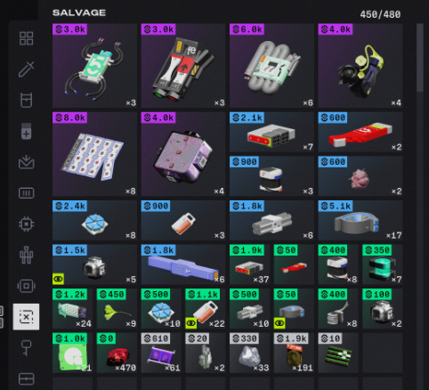
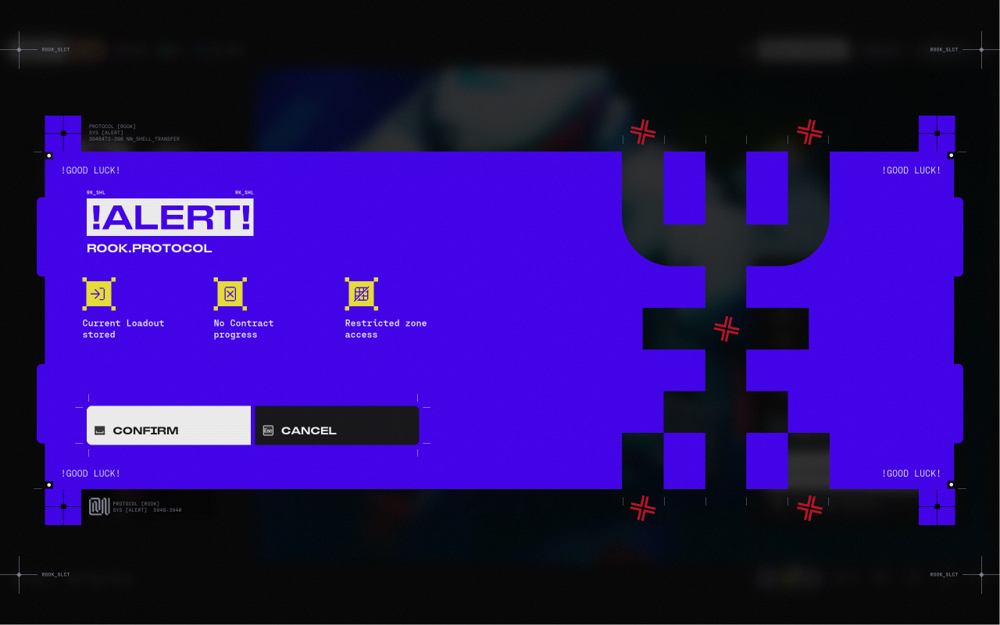

Sử dụng các màu nền có tính bão hòa.
Đưa những màu sắc nổi bật vào các khu vực hoặc chi tiết cần thu hút chú ý.
Tạo sự tương phản giữa các bề mặt kiến trúc.
Sử dụng màu sắc như một công cụ phân cấp vật phẩm.
Bao gồm Trắng phòng thí nghiệm (Clinical White), Xám bê tông (Brutalist Concrete Grey), và Đen carbon nhám (Matte Carbon Black).
Bề mặt vỏ nhựa vô trùng, hành lang phòng nghiên cứu và container UESC.
Khối tường kiến trúc Brutalist, bệ phóng công nghiệp và kết cấu hạ tầng.
Nền giao diện Terminal, sợi carbon vũ khí và vùng tối tương phản sâu.
→ Màu nhận diện thương hiệu chủ đạo của Marathon, dùng cho các điểm tương tác quan trọng, chất lỏng sinh học và ấn phẩm quảng cáo.
→ Màu cảnh báo nguy hiểm, khu vực cấm (Hazard Rooms) và điểm nhấn trên giáp nhân vật.
Kết hợp cùng Hyper Magenta dùng để phân tách các lớp vỏ Runner (như Glitch, Blackbird), giao diện dữ liệu HUD và hệ thống phân cấp độ hiếm của vật phẩm (Loot Rarity).
Tạo điểm nhấn thị giác cường độ cao cho các lớp vỏ Runner đặc biệt, hiệu ứng năng lượng dị thường và phân tách cấp bậc trang bị trong kho đồ.

Theo hồ sơ lưu trữ chuyên ngành trên Fonts In Use và dữ liệu trích xuất từ bộ cài game, hệ thống Typography của Marathon (2026) là sự pha trộn táo bạo giữa các font chữ kỹ thuật công nghiệp (Sans-serif / Monospace) và một font chữ có chân (Serif) mang tính biên tập thời trang:
| TÊN TYPEFACE (FONT CHỮ) | ĐƠN VỊ THIẾT KẾ / FOUNDRY | VAI TRÒ CỤ THỂ TRONG MARATHON (2026) | ĐẶC ĐIỂM THỊ GIÁC |
|---|---|---|---|
|
01 // DISPLAY SANS
1. KH Interference (Regular / Light) |
Kurppa Hosk (Thiết kế độc quyền cho dự án) |
Primary Headline & Display: Tiêu đề chính trên các Poster quảng cáo, màn hình chờ, giao diện HUD và website của tập đoàn Traxus Global. | Font chữ không chân mang cấu trúc hình học vuông vức, cắt góc kỹ thuật số, tạo cảm giác máy móc tương lai sắc lạnh. |
|
02 // WIDE GROTESQUE
2. Marathon Shapiro 65 (Custom Shapiro Wide 65) |
OGJ Type Design (Bungie/Kurppa Hosk tùy biến riêng) |
Secondary Heading & Subtitles: Tiêu đề phụ trong menu game, tên khu vực (Sector) và nhãn lớn trên vũ khí/công trình. | Dáng chữ bè ngang (Wide Grotesque) cực kỳ vững chãi; bản custom của Marathon có thêm chân ngang ở chữ I hoa, chân cong ở chữ R và chân đế ở số 1. |
|
03 // TELEMETRY MONO
3. PP Fraktion Mono (Regular / Medium) |
Pangram Pangram | Body Text, HUD & Micro-Typography: Toàn bộ văn bản mô tả vật phẩm, thông số kỹ thuật, dòng lệnh trên Terminal (như "INITIATE CONSCIOUSNESS LINK") và các cụm chữ nhỏ trang trí trên súng/poster. | Font chữ đơn cách (Monospace) hiện đại, dễ đọc ở kích thước siêu nhỏ, mang đậm hơi thở dữ liệu máy tính (Telemetry data). |
|
04 // EDITORIAL SERIF
4. IvyPresto Headline (Regular) |
The Ivy Foundry (Jan Maack) |
In-Game Character & High-Fashion Accents: Chỉ xuất hiện trong game tại màn hình giới thiệu tên các Runner và các danh hiệu cao cấp. | Điểm phá cách đắt giá nhất: Là một font chữ có chân (High-contrast Serif) thanh lịch kiểu tạp chí thời trang Vogue, tạo sự đối lập đầy nghệ thuật khi đặt cạnh các font chữ kỹ thuật khô khan bên trên. |
| 05 // DIEGETIC GLYPHS 5. Goliath Beta Encrypted & Shorai Sans StdN | Custom / Monotype | Worldbuilding & Glyphs: Dùng cho hệ thống ký hiệu mã hóa ẩn (ARG) và các dòng chữ công nghiệp đa ngôn ngữ trên bề mặt trang bị. | Tăng độ tin cậy cho thế giới giả tưởng (Diegetic realism). |
Cấu trúc vuông vức, bè ngang vững chãi dùng cho biển hiệu khu vực và tiêu đề công nghiệp.
Chữ có chân thanh lịch kiểu tạp chí thời trang Vogue đối lập hoàn toàn với nét chữ máy móc.
